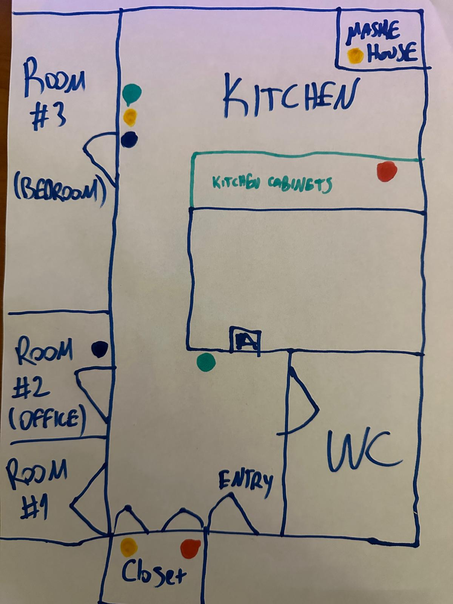

🏠 The House Map
Here is where you can find everything.

- Feeding Bowls
- Water Fountains
- Food Stash (Wet/Dry)
- Toys
*Please refer to the colored dots on the map above to locate items.
📝 Daily Checklist
Please follow these steps in order:
-
Fresh Air: Open some windows from the top to refresh the air in the house while you do the other steps.
-
Clean Bowl: Rinse the wet food bowl with hot water. Maske utensils for cleaning and refilling is next to kitchen sink in a green bowl.
-
The Refill: Refill both the dry and wet food bowls. Half cup of dry food, half pack of wet food daily. Before serving wet food please add 3 table spoons of hot tap water and mash it up well before serving. And as a topping please add 3-4 dry freeze snacks on top. (Located in the food stash next to kitchen cabinet, dry freezes are in a cylinder box)
-
Water Check: Check if the water fountains are still flowing nicely.
-
Play Time: Play with Maske using his favorite toys (marked yellow on map) and pet him as much as you can.
-
Safety First: Close all windows securely before you leave.
-
18th of January: 2-3 cm of hairball removal paste to be given orally, it's called bolo via. It's in the kitchen food stash.